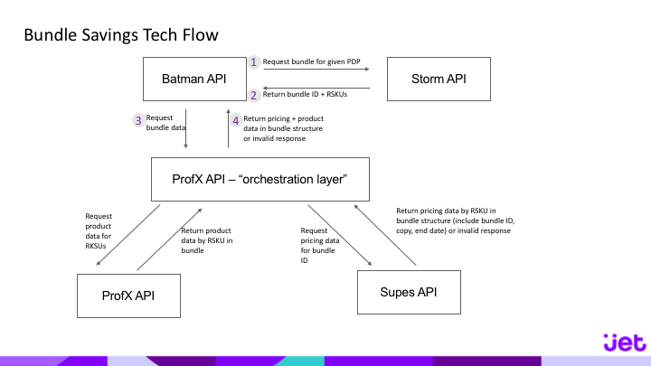

Historical data on purchase history was used to determine what people are likely to purchase together. We developed a basic equation that utilized popularly bought items and paired them with other items in the broader category that may increase the margin of the entire purchase. By using this information, we were able to develop over one thousand bundles in partnership with the business team to build at launch.
The most complex part of building the consumer bundle feature was the underlying technical architecture. To accomplish development of this feature within 4 months, we needed to involve 6 different development teams. There was sign-off and scrutiny throughout the development process from the full executive team at Jet. It required a significant re-architecture of the cart infrastructure to allow for groups of items within the cart. This re-adjustment also paved the way for other features that involved groupings of products together.
The consumer bundle feature was the first savings feature added shortly after launch. It was also the most complex savings feature to launch based on the pricing rules involved, the number of tech teams required to launch, and the explainability to the user. To launch this feature within 4 months, including design, development and testing, I developed several project management requirements that were followed not only for this large cross-functional endeavor, but for nearly all cross-functional projects subsequently. These project management requirements included weekly technical touchpoints with tech leads across all 6 development teams involved. Teams were expected to report on progress, discuss overlaps or blockers related to other teams and update any externally provided deadlines. Along with these weekly touchpoints, I sent out two weekly status updates. One was an internal status update sent to designers, developers and product managers on the relevant teams to provide detailed information on cross-team dependencies so we could ensure we were on schedule. The other status update was external-facing, to the GMs, VPs and president of Jet. This status update provided an executive summary and also focused on business-related updates and key wins, whether they had to do with user testing or technical achievements.